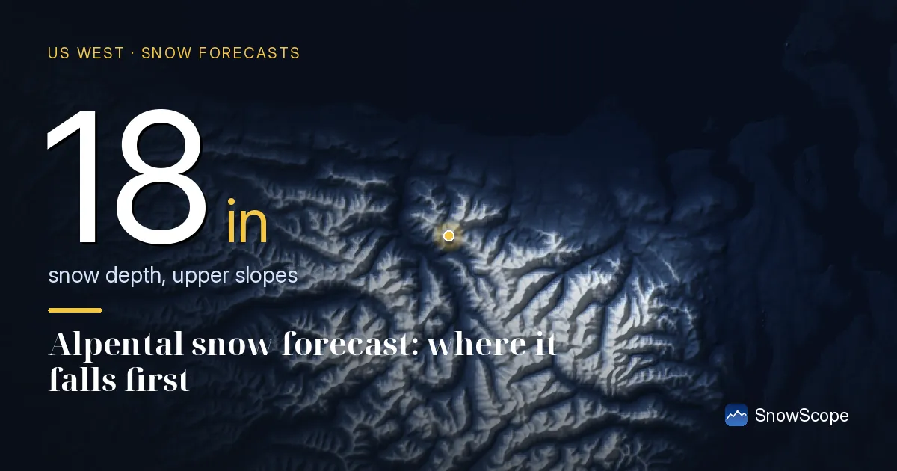
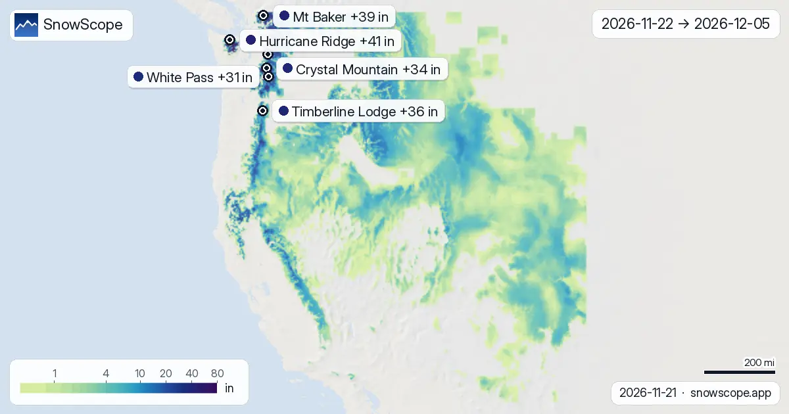
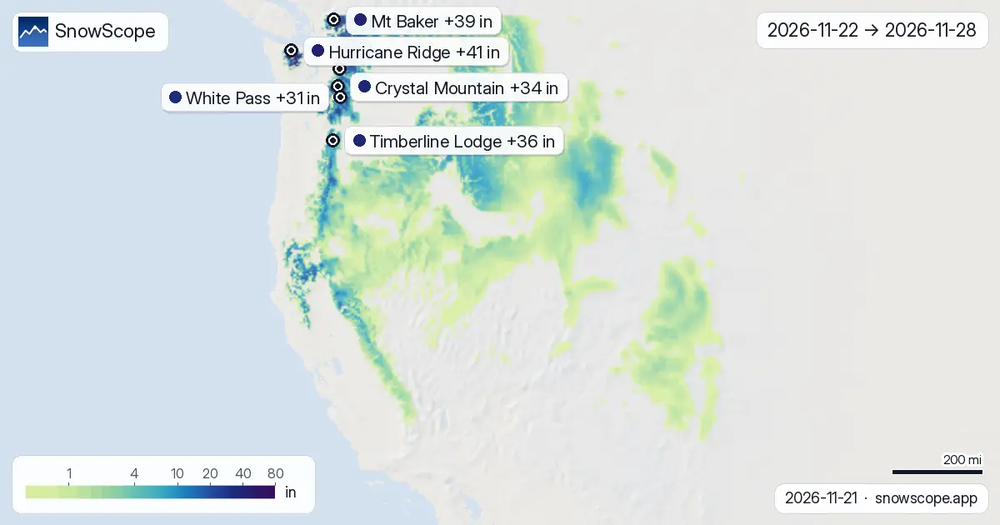
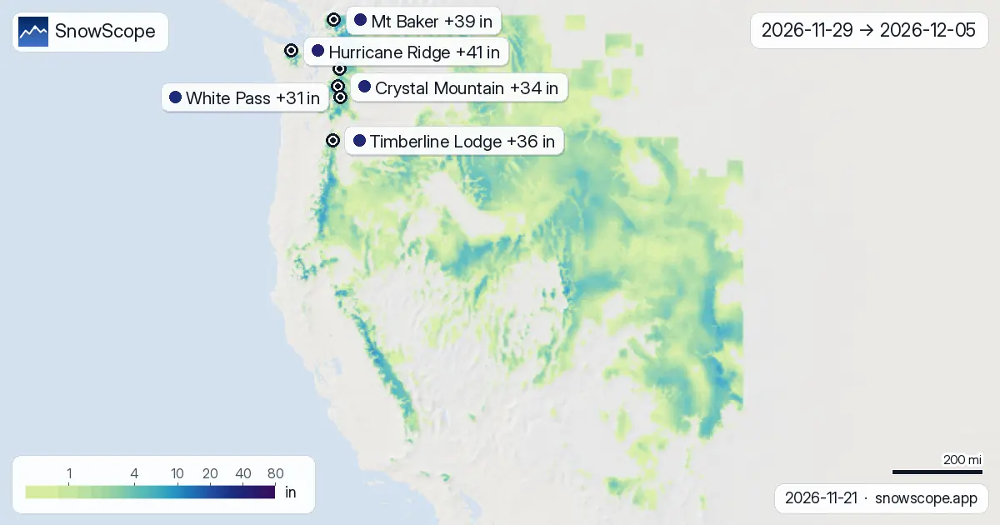

Alpental snow forecast: where it falls first
Alpental snow forecast – SnowScope shows the US West will collect 199 cm (78 in) of new snow over the next 14 days, with more than half arriving in the coming week. The pattern favors high terrain above 2500 m, where some areas could see 11 to 13 cm, while lower slopes will receive less but still meaningful accumulation.
See the live snow forecast for Hurricane Ridge in the SnowScope appSnow depth, powder alerts and the 3D map, free.
When the snow comes: heavy week one, light week two
The next seven days will carry the bulk of the forecast snow.
Week two (29 November to 5 December) turns quieter. SnowScope shows scattered snow days but far less volume. November 29-30 offers a brief window of activity, with the snowiest day on the 29th bringing 22 cm at Bear Valley. After that, the region dries out until a small burst late in the second week. Early-season snow at lower elevations will thin quickly in dry air, so timing matters.
| Resort | Snow depth | New snow, 72 h | Coming, next days | Top |
|---|---|---|---|---|
| Hurricane Ridge | 7 in (19 cm) | 1 in (2 cm) | 16 in (40 cm) | 5,446 ft (1,660 m) |
| Mt Baker | 6 in (16 cm) | 0 in (1 cm) | 9 in (22 cm) | 5,105 ft (1,556 m) |
| Timberline Lodge | 18 in (45 cm) | 0 in (1 cm) | 10 in (25 cm) | 8,484 ft (2,586 m) |
| Crystal Mountain | 14 in (35 cm) | 1 in (3 cm) | 7 in (18 cm) | 6,798 ft (2,072 m) |
| White Pass | 13 in (33 cm) | 2 in (4 cm) | 6 in (14 cm) | 6,519 ft (1,987 m) |
| Alpental | 4 in (9 cm) | 0 in (1 cm) | 6 in (15 cm) | 5,443 ft (1,659 m) |

Height matters most: high peaks win
Snow will not fall evenly across the mountains. SnowScope shows terrain above 3000 m (9843 ft) will receive a median of 11 cm over 14 days, reaching 13 cm in the upper quarter of outcomes. Drop to 2500-3000 m and the median is 9 cm. Below 2000 m, accumulation falls sharply: only 1-3 cm at 1000-1500 m elevations.
This means high ridges and upper slopes will hold good snow by late November, but mid-mountain and base areas in the Cascades and Sierra remain thin. Around 122,460 km² of terrain across the region will see 20 cm or more, but just 18,607 km² will exceed 50 cm. Early-season climbing to higher aspects and elevations is essential.

Where to look: northern ranges lead
Hurricane Ridge in the Cascades tops the two-week forecast with 105 cm (41 in), peaking at 35 cm on 24 November. Mt Baker follows with 99 cm, also strong early in the week. Timberline Lodge will collect 92 cm with its heaviest day on the 26th. These northern and higher resorts benefit from both the week-one surge and secondary snow in week two.
Lower Cascades areas like Alpental sit at 79 cm and will feel the shortage of early-season moisture at their base elevation of 958 m. That gain comes from fresh accumulation on bare terrain, so actual skiable depth remains thin in many valleys.

Forecast uncertainty: models agree on week one
Both from the forecasts of agree on the broad pattern: a wet week arriving tomorrow, heaviest on the 26th, then drying. The range between low and high forecasts is wide at many resorts—Hurricane Ridge shows 69 to 140 cm spread—because steering and intensity can shift in a marginal season. By Friday 24 November we will have better clarity.
On the ground, rocks will show through thin base snow, especially below 1500 m. Sun and wind can erase gains quickly in dry mountain air. Treat this as a guide to mountain snow state, not a promise of deep pow.
What to do now
If you plan to ski in late November, watch the 26th: that is your best betting day for fresh tracks. High peaks—Mount Hood, the northern Cascades, the crest of the Sierra—will be in best shape. Lower resort bases and south-facing slopes will stay thin; plan for rocks and variable coverage. By early December, week-two snow will be sparse. Wait for a bigger pattern shift in mid-December if you want truly skiable conditions across the board.
Tips for skiers
- Wednesday 26 November is the snowiest day: aim for upper slopes above 2000 m (6562 ft) and north-facing aspects where snow will accumulate fastest and persist longest.
- High terrain above 2500 m (8202 ft) will hold 9-13 cm by the end of week one; lower mid-mountain zones will see 3-5 cm and may need active grooming or will develop thin, breakable crust.
- Watch Hurricane Ridge and Mt Baker as early-week guides. If they are loading as forecast, the broader north Cascades pattern is on track; if they lag, entire forecast shifts.
- Second wind on 29-30 November is light; do not plan week-two trips on fresh snow expectations. Most of the 14-day total arrives in the next seven days.
- Check the official avalanche bulletin if you venture off-piste, especially on steep north-facing slopes after Wednesday's heavy fall. Thin base and rapid loading raise concern.
About these numbers
Resort snow depths are the deepest snow on the resort's upper slopes on the date shown; they are estimates for an area, not a measurement at one point. Forecasts can change. Always read the official avalanche bulletin before going off-piste.
Official avalanche bulletins: avalanche.org
Cite this report
For research, teaching or the press: the numbers and charts are free to reuse under CC BY 4.0 with this citation.
SnowScope (2026), Alpental snow forecast: where it falls first, https://snowscope.app/blog/en/2026/11/us-west-2-week-snow-forecast-maps-21-november-2026.html, accessed 2026-11-21
SnowScope (Atlas Labs). (2026, November 21). Alpental snow forecast: where it falls first. SnowScope snow reports. https://snowscope.app/blog/en/2026/11/us-west-2-week-snow-forecast-maps-21-november-2026.html
BibTeX
@misc{snowscope2026uswest2weeksnowforecastm,
author = {{SnowScope (Atlas Labs)}},
title = {Alpental snow forecast: where it falls first},
year = {2026},
month = nov,
howpublished = {\url{https://snowscope.app/blog/en/2026/11/us-west-2-week-snow-forecast-maps-21-november-2026.html}},
note = {Published 2026-11-22 10:03 UTC; accessed 2026-11-21}
}· CC BY 4.0 · Methods, data and tools →
Hurricane Ridge: snow and temperature by height, this winter vs last (tools) →
Follow Hurricane Ridge
Free: a message when fresh snow is coming, and the forecast every morning.
More snow reports

Alpental snow forecast for 13 November 2026: about 1 in on the upper mountain, rain almost to the summit this weekend with a snow level near 5,400 to 5,600 ft, then 4 to 5 in of mixed rain and snow up top next week.

Mt Baker will see 22 cm of new snow by November 24, but the freezing level rises above 1,000 m on November 22, bringing rain-on-snow risk to lower slopes.

Mt Baker, Washington: about 133 in (337 cm) at the usual peak at mid-mountain in 46 past winters, a world snowfall record, no lodging on the hill, and what that means.